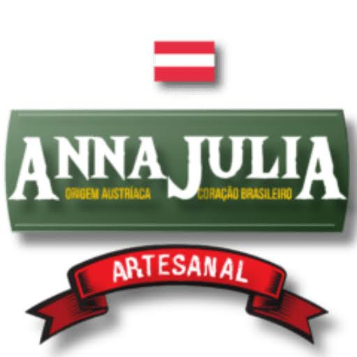
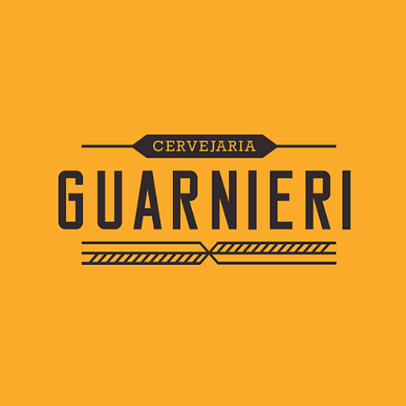
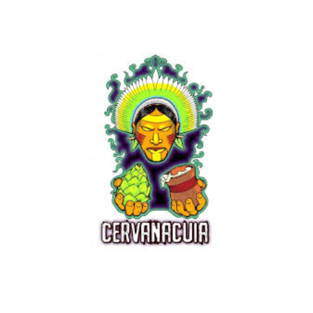

Cervejaria Anna Julia
Anna Julia Lager
ABV: 4,5%
IBU: 22
Mantendo a pegada da escola austríaca na receita e adaptando à preferência do brasileiro, o resultado é de um chopp leve, delicioso e sem perder a personalidade das cervejas artesanais Anna Julia, virtualmente anti-ressaca.
Coloração: Dourado vibrante
Caldereta 300ml: R$
Growler 1lt: R$
Anna Julia IPA
ABV: 6,3%
IBU: 44
Explosão de sabores e aromas muito bem inseridos. Possui um blend exclusivo de 4 maltes que é o segredo do mestre-cervejeiro, sendo o malte Carared em baixa proporção que influencia na coloração mais escura e viva, e no levíssimo toque de caramelo e nozes no paladar. Na lupolagem é usado um mix de Simcoe, Citra e Cascade, sendo os dois últimos utilizados também no dry hopping conferindo delicioso aroma de frutas amarelas.
Coloração: Clara
Caldereta 300ml: R$
Growler 1lt: R$
Anna Julia Pilsen
ABV: 5%
IBU: 31
Descrição Geral: Mantendo a pegada da escola austríaca na receita e adaptando à preferência do brasileiro, o resultado é de um chopp leve, delicioso e sem perder a personalidade das cervejas artesanais Anna Julia, virtualmente anti-ressaca
Coloração: Clara
Caldereta 300ml: R$
Growler 1lt: R$

Cervejaria Guarnieri
Cachorro Ovelheiro IPA
ABV: 6%
IBU: 60
Uma IPA que tem como característica principal o equilíbrio. Lúpulo aromático bem evidente deixando o aroma convidativo. O amargor macio, não é incomodo nem adstringente. Sabor remete a frutas amarelas com evidência maior no maracujá.
Coloração: Brilhosa, Turva e Clara
Caldereta 300ml: R$
Growler 1lt: R$
Santo Coyote APA
ABV: 5%
IBU: 44
Cerveja saborosa, com aromas e sabores frutados intenso de manga e maracujá, florais e com leve aroma cítrico de abacaxi. No sabor, uma explosão de frutas amarelas como pêssego, damasco, ameixa fresca e também amora. O amargor macio, aveludado, que se intensifica com o gole e termina equilibrado.
Coloração: Amarelo intenso, dourada, límpida
Caldereta 300ml: R$
Growler 1lt: R$

Cervejaria CERVANACUIA
Ipa na Cuia IPA
ABV: 6,6%
IBU: 52
A West Coast IPA é um símbolo das cervejas artesanais americanas e um estilo que se aprende a apreciar aos poucos pois requer um desenvolvimento do paladar; A receita é proveniente da existência das Ales desenvolvidas na West Coast (Costa Oeste) dos Estados Unidos. O termo ‘West Coast IPA’ faz referência a uma cerveja de sabor marcante, A Ipa na Cuia leva malte caramelizado e lúpulos.
Coloração: Clara e Brilhosa
Caldereta 300ml: R$
Growler 1lt: R$